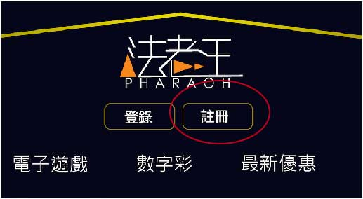
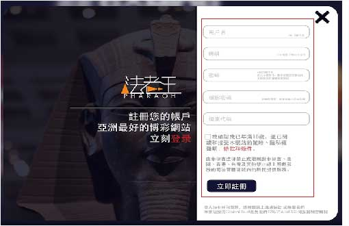
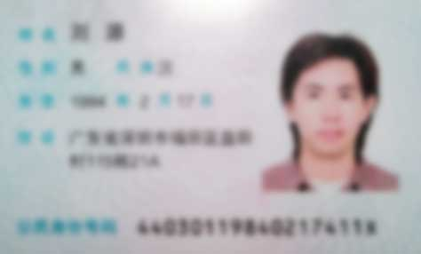

-
關於我們
法老王娛樂集團（Pharaoh Games）與Richwell Global Technology Inc.（擁有菲律賓First Cagayan online gaming合法牌照的網路博彩公司）是戰略合作的夥伴，也是業界少有的系統丶平台丶合作代訓一條龍作業的實力博彩公司，並提供合營者客制化的服務。
多年來致力於亞洲（大陸丶台灣丶新加玻...）的信用平台發展，已累績15年的優良品牌信譽。因此在追求卓越的道路上總是以『顧客第一丶利益第二』惟最終信念，並不斷的投入大量的研發成本丶不斷的開發新款遊戲，只為滿足會員求新求變的慾望。
因有累積10幾年的信用平台經營的經驗與信譽，因此24小時在線的專業客服丶快速出款服務與公平公正的財務部門是我們的堅持，並提供給玩家最優質的娛樂平台。
品牌故事
『法老王』源自於古埃及君主尊稱，由於古埃及法老是神的化身，因此古埃及人深信，法老會帶給他們幸福。經由歷代的考古學家證實，在法老時期的埃及人生活是相當奢華的，所以對古埃及人來說法老是他們的最高崇拜的對象。
『法老王娛樂集團』於2005年因緣際會下，與這神秘的古埃及文明有了不解之緣，並且希望能夠效法法老的精神，除了給玩家最好最優質的享受外，也在2008年開始每年都捐款投身公益，並相信法老會帶給玩家好運。
-
責任博彩
『投資』與『賭博』雖然兩者的共同點都是『機會丶金錢遊戲丶數學概率的表現』，都是講求風險與報酬率。理性的玩家會做適當的資金管理與適當的自我調整，將游戲視為一種投資的標的物。若您是追求高度刺激快感的玩家，那我們得提醒你，『小賭怡情丶需自我控制』。
年齡限制
『法老王娛樂』不允許未滿18歲的未成年進行遊戲投注與領獎。註冊時我們會嚴格的把關，若一經發現造假個人資料，則我們有權『沒收獎金』。
若家長有未滿18歲的孩童共用電腦時，我們建議您需安裝過濾軟件來限制博彩網站的瀏覽。
自我限制與隔離
『法老王娛樂』負有高度的監督與道德責任，為了幫助無法自我控制的玩家，我們提供輔導諮詢程序並協助玩家來控制自己的賭博行為，24小時在線客服可隨時協助您調整儲值丶轉入遊戲金額與關閉帳號等服務。
自古以來『輸贏乃兵家常事』丶『天下無不散的宴席』，切勿過度勉強自己。
以上責任博彩請您詳細了解自身的狀況與自我管理能力，我們會努力為您提供一個健康的遊戲環境。
-
條款及條件
當您註冊成為『法老王娛樂』的會員後，即可享有本公司提供之優惠與服務（以下稱為本服務）。當會員可使享用本服務時，即表示會員接受本服務條款與本公司相關規範（各項遊戲規則丶投注規則丶派彩規則丶跑馬燈與公告事項）及相關法令規定。
1.服務簡介
本公司『法老王娛樂丶Richwell Global Technology』註冊辦事處在12th Floor, PBCOM Tower, 6795 Ayala Ave., Cor. Rufino St., Makati City。是由菲律賓政府所授權和監管之合法的線上博彩公司。本公司會提供會員最優質的博彩平台服務。
2.使用條款更改說明
本公司有權新增或修改本服務。所有更新即修訂後的條款與服務，一經公佈在網站上，便立即生效。使用者需定期查閱本服務與條款以確保自身權益。
3.服務申明
使用本服務之會員使用本網站前，須確保當地法令之許可，如有違反之情節，恕不在本服務範圍內。 （經營商不承擔任何用戶違反自身居住的司法管轄區丶州丶國家之法律責任）。
4.註冊資訊
1.玩家在註冊時，必須正確的填寫真實資料，若一經發現偽造他人身份則凍結帳戶與沒收獎金。
2.本公司有權驗證其註冊資訊的有效性，如須變更任何資訊須立即通知本公司。
3.玩家應為自身的帳號丶密碼丶提款密碼及其他安全資訊負責。
4.一個用戶資料只能申請一組遊戲帳戶，我們將拒絕任何重複資料申請遊戲帳戶的申請，請會員多留意。
5.隱私申明
本公司非常重視客戶的隱私。因此，本公司在未經玩家與合營者的同意下，不會將您的資訊透露丶轉售丶出界或公開。對合營者我們會以嚴格的要求把關且必須遵守此條。
6.終止
本公司（服務）有權立即暫停或終止會員帳戶的使用權利。
若玩家違反本服務條款或其他遊戲相關規定，則本公司有權終止玩家帳戶，凍結任何遊戲獎金（沒收丶保留丶延遲）。
7.爭議處理
若玩家發現有任何爭議的問題（賽果錯誤丶派彩金額錯誤丶賽事錯誤...等）時，請立即聯繫本公司客服，或是透過其他官方聯繫方式聯絡本公司。
8.休眠或關閉帳戶
玩家帳戶若連續六個月未有存款丶提款丶錢包轉帳丶投注等動作時，本公司有權將該帳戶視為休眠帳戶，將會進行暫時性的凍結。
玩家帳戶若連續六個月未有登入的動作時，本公司有權關閉此帳戶丶處理帳戶剩馀點數，並斟酌情況重置此帳戶。
9.錯誤
若發生明顯錯誤時，本公司會立即處理給予糾正。
若玩家透過錯誤或其他漏洞獲利時，本公司會立即通知玩家並有權將獲利點數追回。
10.免責聲明
因部分地區丶國家法律尚未明定線上博彩的合法性，玩家須自行承擔使用本網站之風險，若玩家使用上衍生相關法律問題且一經通知本公司時，我們保有限製或終止您訪問本網站的權力。
本網站安全可靠，網站與網站伺服器皆無病毒。若玩家從其他網站上下載任何非官方授權的圖案或文件時，請您先充分考量並自行承擔風險。
-
隱私權政策
1.資料收集
- 申請帳號：當您訪問本公司或本公司其他分站時，您可以匿名訪問我們。倘若您需申請帳號時，只需簡易填寫不需留下個人資本資料。
- 存提款：若使用者需使用存提款功能時，本公司將要求填寫您的基本資訊是為收集可識別資訊之使用，方便本公司作業也保障使用者的權益。
2.在使用本服務時，本公司會不定期的寄發活動資訊丶更新活動產品訊息給您，讓您能充分享受本公司的服務。
3.帳戶訊息更改：使用者隨時都能於本公司網站更新丶修正個人資料。
4.當您註冊或存提款提交個人資訊時，就表示您同意我們的隱私權政策，我們會妥善保管您的個人資訊。
5.本公司保留修改任何隱私權政策的權利，更改的同時，我們會立即通知使用者。
-
聯擊我們
感謝您訪問『法老王娛樂』Pha888.com
歡迎各位訪客丶使用者蒞臨，如有任何的意見丶建議都可以隨時地聯絡我們。
聯絡方式
市場合作聯絡微信號碼：pha888service
線上客服： 線上客服
註冊辦公地址：12th Floor, PBCOM Tower, 6795 Ayala Ave., Cor. Rufino St., Makati City
-
如何開戶
註冊
進入本網站 pha888.com 頁面後，點擊右上方『註冊』按鈕
 按一下『註冊』按鈕後，即會彈跳出全新使用者註冊頁面
按一下『註冊』按鈕後，即會彈跳出全新使用者註冊頁面
依照欄位指示填寫資料，並提交完成（微信號必須填寫正確，如有帳號密碼忘記，可透過微信客服取得正確的帳號密碼。）
 註冊完成後，會看到歡迎加入法老王娛樂城的彈跳視窗，表示您已註冊成功，並可立即體驗與享受網站上各項精彩娛樂
註冊完成後，會看到歡迎加入法老王娛樂城的彈跳視窗，表示您已註冊成功，並可立即體驗與享受網站上各項精彩娛樂
-
存款流程
-
提款流程
-
存款Q&A
1.存款方式
法老王娛樂城向用戶提供多種存款方式，您可以選擇您最便捷的方式進行存款。
- 在線支付
只要您擁有網銀賬戶，即可通過網上銀行進行在線存款交易。在線支付是指賣方與買方通過網上的電子商務網站進行交易時，銀行為其提供網上資金結算服務的一種業務。它為企業和個人提供了一個安全丶快捷丶方便的電子商務應用環境和網上資金結算工具。
- 銀行匯款
進行銀行匯款有很多種方式，只要您所持有的銀行支援，您都可以進行匯款。目前主要的存款途徑分為：
ATM存款 / 櫃台存款 / 網銀存款 - 存款安全
我們一直將保護客戶隱私及安全性作為首要宗旨，所有支付交易的處理均採用了高標準的DES Base64對參數加密，並且支持https傳送數據加密方式，確保您的所有信息萬無一失。
2.存款中常見問題
-
問： 沒有網銀賬戶是否能存款？
答： 可以。法老王娛樂城為您提供多種存款方式，如果您沒有網銀賬戶，也可以通過銀行匯款的方式進行存款。我們支持內地主流的三家銀行（中國工商銀行丶中國建設銀行丶招商銀行）的銀行匯款。您可先登錄網站獲取我們的存款賬戶信息，之後通過ATM或者轉賬匯款方式進行存款。
-
問： 存款後多久款項能到我的法老王娛樂城賬戶？
答： 法老王娛樂城提供最先進便捷的存款方式及到賬速度。如使用在線支付方式存款，在您完成存款的同時，款項即可到賬。如使用銀行匯款方式存款，請務必留意您實際存款金額和信息與您獲取存款賬戶時填寫的信息完全一致，這樣您的款項也是可以即時到賬的。
-
問： 是否可以使用其他人的銀行卡存款？
答： 不可以。因為遵守國際反洗錢法的規定，我們只允許客戶使用本人的銀行卡進行存款。
-
問： 存款有沒有手續費？
答： 無論您使用何種存款方式，法老王娛樂都會承擔您的手續費。您使用在線支付方式存款是沒有手續費的。銀行匯款方式存款，銀行會收取您一定的手續費用，但是我們會給您每筆存款1%的存款手續費紅利，可以很好地補貼您的手續費。
-
問： 存款後款項沒有到賬怎麽辦？
答： 請聯繫我們7x24小時在線客服尋求幫助，我們將竭誠為您服務。
-
問： 如果我沒有網銀又沒有您們指定銀行的銀行卡，如何存款？
答： 首先建議您去開通銀行卡網上銀行功能，這對於您的存取款都將會非常便利。如果您暫時沒有網銀，您也可以使用ATM或者轉賬匯款的方式進行銀行轉賬匯款。
-
問： 可以跨行匯款嗎？
答： 可以，但是我們不建議您使用跨行匯款。因為跨行匯款的到賬速度取決於銀行的處理時間，到賬時間無法保障。如果您暫時只可使用跨行匯款方式存款，建議您在銀行的工作時間內使用跨行快匯的方式，處理時間及到賬速度還可以保障的。非銀行工作時間內不建議您進行跨行匯款。
-
問： 更換存款方式怎麽辦？
答： 如果您先獲取了我們提供的銀行賬號，而後又想通過在線支付的方式進行存款。請重新點擊『存款』，重新進行一遍存款流程的操作即可。
獲取存款賬號後，請留意在賬號的有效期內進行匯款。如賬號過期，請重新獲取新的賬號進行存款。網站頁面上都會有簡潔清晰的標注，請您在操作時留意每一步的提示信息。
- 在線支付
-
提款Q&A
1.提款方式
法老王娛樂城支持內地各大銀行卡進行提款。請按照提款頁面上的提示，進行仔細填寫，不要出現錯誤，以免款額不能及時準確的到達。
2.提款常見問題
-
問： 取款需要多長時間？
答： 法老王娛樂城提供中國大陸客戶最快的提款到賬時間，使用工商丶建設丶招商三家銀行提款，10分鐘內即可到賬。其他銀行賬戶申請提款，10分鐘內即可為您辦理，實際到賬時間依銀行處理時效為準。
-
問： 支持哪些銀行的銀行卡取款？
答： 法老王娛樂城支持內地各大銀行卡進行取款，您可放心操作。
-
問： 我可以用別人的銀行卡取款嗎？
答： 為保障賬戶的資金安全，您僅可使用與賬戶註冊姓名一致的銀行卡進行取款。
-
問： 取款的次數有限制嗎？
答： 每天或每周的取款次數是沒有上限的！
-
問： 都什麽時間可以取款？
答： 您每天的任意時間都可以進行提款操作。
-
問： 取款金額有限制嗎？
答： 取款的最小金額是100元。單筆取款上限為450,000元，每個賬戶每天可取款的額度無上限！
-
問： 為什麽提款後遲遲未到帳？
答：（1）請參閱提款注意事項，確認您是否在操作中進行了錯誤的操作。
（2）是否已經在法老王娛樂城進行完整的身份信息填寫，如身份信息等。
（3）其他不符合本公司提款要求的規定等。
（4）如遇不可抗拒的因素，自然因素，不屬於法老王娛樂城工作系統內容等。 -
問： 我要如何更換或取消已綁定之提款銀行卡?
答： 請您登錄網站後，點擊『會員中心』，並點選『解綁提款銀行卡』，經由提示操作後更換提款銀行卡資料。
3.提款注意事項
- 銀行帳戶持有人姓名必須與在『法老王娛樂城』註冊的姓名一致，否則無法申請提款。
- 客戶需經過本網站『實名認證』服務後，才能申請提款
- 單筆提款金額超過5萬元，會有延遲到帳的情形（此乃各銀行作業問題），請客戶多多留意。
- 客戶需要經過有效投注之後才可以進行提款。比如您存款1000，您買彩100，中500，合計帳戶1500，此時您可以提款的金額為600元。因為您的存款還有900未經投注所以不可全額提款。您的投注額必須超過1000元才能將餘額全部提款。
- 若客戶有參加本網站任何優惠活動時，請詳細閱讀活動內容，在活動未完成時，可能會凍結部分資金，待活動完成後方得申請提款。
- 投注額的刷新需要一定時間。娛樂場投注需要30-60分鐘，體育網站的投注也需要一定時間。
- 每位客戶最多可同時綁定三張提款銀行卡，如需要更換銀行卡，客戶可自行在頁面進行操作。
- 提款最低金額100元，每日的提款金額無上限。
- 客戶需要將資金轉入主帳戶內才可以進行提款。
- 銀行卡需要填寫包括所在省市以及支行在內的所有資訊。
- 需要在半形狀態下進行輸入提款資訊。同時按下Shift 空白鍵可以進行半/全形的切換。半形狀態下輸入顯示123，全形狀態下輸入顯示123。
4.提款特殊情況
在法老王娛樂城，我們在處理支付交易方面，一直保持嚴謹及專業。為了保障我們會員的利益，避免在多種提款方法中遇到欺詐的情況，我們有可能將會在會員第一次大額提款時，需要獲得其正確的身份；請留意，這些可能都需要使用傳真機或掃瞄機。
雖然這些程序並非理想，但是它們都能幫助我們實行嚴謹的安全控制，且為會員及本公司提供保障。我們處理任何投注賬戶提款前，必須經過覈實檢查，看看有關會員的身份證明副本是否有存檔。這是全部提款方法強制性的要求。若並未有提供檔，提款將不被處理。我們的客服將會聯繫您，跟進有關提款要求。請容許我們在3個工作日內檢查資料，以及順序覈實，然後批准提款要求。
以下是所要求的資料
- 閣下需要提供有您照片的身份證，護照，戶口簿或駕駛執照的副本給我們。
- 副本上的照片必須清楚。
- 閣下將只需提供您的身份證明一次給我們，您便能夠從您的賬戶不斷提款。
交易記錄證明
- 銀行賬戶及信用卡結算單副本反映最後一個轉賬到您法老王娛樂城賬戶的成功存款記錄。
- 最近的（不超過三個月）銀行賬戶及信用卡結算單副本。
居住證明
- 最近的（不超過三個月）水電費單副本。
- 銀行賬戶及信用卡結算單副本反映您在法老王娛樂城註冊的姓名以及地址。
-
-
身份驗證說明
適用情況
當發現使用者帳戶出現以下任一情況的時候，可能會被要求進行身份證驗證，同時我們保證您所提供的一切個人資訊只會用做驗證您身份的真實性，且都會被嚴格保密。
1. 帳戶資訊修改類
- 修改真實姓名
- 客戶無法自行通過身份驗證
- 客戶忘記登錄密碼丶保密答案
- 客戶需修改手機號碼丶郵箱位址資訊
2. 帳戶審核類
- 客戶首次大額提款
- 懷疑客戶有違規投注丶異常操作等行為（內含高盈利客戶）
- 懷疑客戶帳戶存在同設備多帳戶丶異常登錄丶被盜嫌疑等安全風險情況 ‧懷疑客戶在網站進行惡意操作等行為（含惡意騙取銀行卡資訊客戶丶惡意篡改網站代碼等客戶）
身份證照片內容及格式要求
1. 證件要求原件拍攝，照片不得塗改，需確保完整丶浮水印丶文字丶圖片丶證件號碼清晰可辨
2. IC版證件需要同時提交正反二面
3. 如是一代身份證，證件上需有有效蓋章
4. 證件有效期在3個月內的不予受理
5. 戶口本需要正面打開蓋有兩個章的那頁,及本人信息的那頁
6. 申請人帳戶真實姓名和證件號碼與提交的證件資訊一致
7. 證件都需要彩色原件的數碼照片
溫馨提示
1. 如果您沒有身份證，則可提供在有效期內的臨時身份證丶戶口本丶護照丶軍人身份證丶武裝員警身份證丶港澳台身份證丶港澳台通行證等有效證件的清晰照片。
2. 您可以使用數碼相機丶手機或較高圖元攝像頭拍下身份證，並上傳到您的電腦保存為jpg丶gif丶png或jpeg的格式，就可以是有您的電子郵箱發送郵件給我們了。
3. 發送證件照片時，請說明您需要處理的事項，此次發送照片，僅會處理您此次所需處理的事項。法老王娛樂.com絕不會洩露您的證件資訊，請您放心！
證件清晰度圖示（以二代證為例）
正面 - 清晰

正面 - 不清晰

反面 - 清晰

反面 - 不清晰